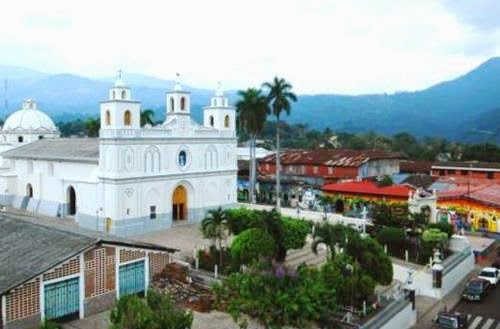
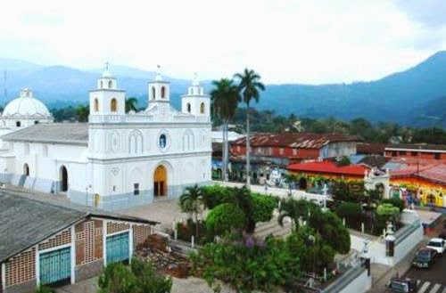

Historia Ahuachapan
Fue creado por Ley de 9 de febrero de 1869 durante la administración del Dr. Francisco Dueñas. Su cabecera es la ciudad de Ahuachapán y consta de dos distritos o partidos: el de Ahuachapán y el de Atiquizaya, instituidos por las leyes de 4 de julio de 1832 y 26 de febrero de 1869, respectivamente.
El actual gobernador departamental es Salvador Antonio Gómez Góchez nombrado en mayo de 2011, por Mauricio Funes (ex presidente salvadoreño).
Poblacion 319,503 hab.